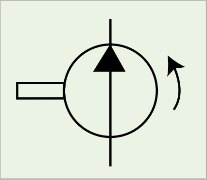
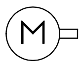
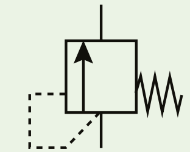
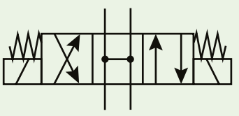
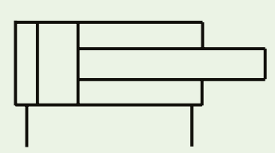
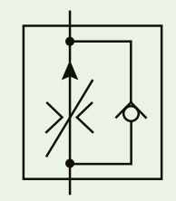
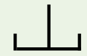

📐 ISO 1219 符號圖鑑
液壓工程師的全球語言。記住三原則：方框 = 閥的工作位置、三角形 = 能量轉換方向、斜箭頭 = 可調整。詳細原理見 Level 2。

液壓泵浦
Hydraulic Pump
圓圈 + 實心三角形，三角形尖端朝「出口側」代表輸出能量。若有斜箭頭穿過 = 可變排量泵。
相關章節：Level 3 液壓泵的原理與類型

電動馬達
Electric Motor
圓圈內標注 M，是液壓系統的原動力來源，帶動泵旋轉，把電能轉換成機械能。
相關章節：Level 1 液壓系統的五大元件

壓力溢流閥（安全閥）
Pressure Relief Valve
方框內箭頭偏離通路 = 常閉。虛線（先導管路）從進口側引壓，彈簧符號代表設定值可調。壓力超過設定值時開啟洩壓回油箱。
相關章節：Level 4 壓力安全閥

4:3 方向控制閥
4/3 Directional Control Valve
4 個通口（P、T、A、B）、3 個工作位置（3 個方框）。中間方框是「中位機能」——決定待機時流量去哪裡（開心式/閉心式的關鍵）。
相關章節：Level 3 開心式與閉心式、Level 4 方向控制閥

雙動油缸
Double Acting Cylinder
兩個油口都可進油：一側進油伸出、另一側進油縮回。注意活塞桿側面積較小——伸出力大而慢、縮回力小而快。
相關章節：Level 4 液壓執行器

附單向閥的流量控制閥
Flow Control Valve with Check Valve
一個方向節流控速（斜箭頭 = 可調），反方向通過單向閥自由流動不節流。常用於「進慢出快」或「出慢進快」的單向速度控制。
相關章節：Level 4 流量控制閥

回油箱
Return to Tank
梯形開口符號代表油箱。管線端點接到油箱符號 = 油液回到油箱。注意管口在液面上方或下方有不同畫法（液面下回油可減少氣泡）。
相關章節：Level 1 液壓系統的五大元件